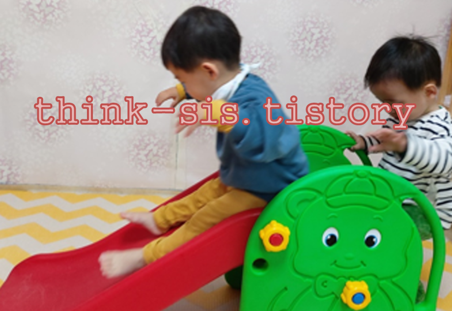
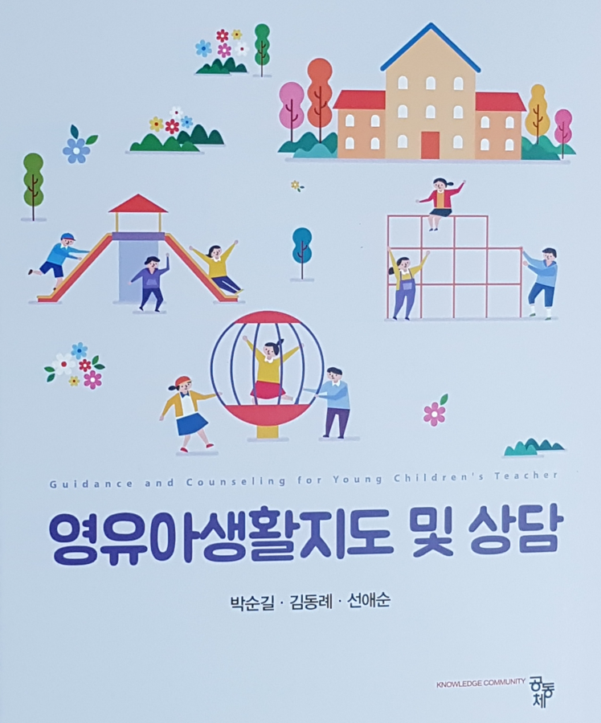

1. 떼쓰는 아이의 행동 특징
발달 과정에서 자의식이 발달하는 아이가 자기주장을 하기 위해 떼를 쓰는 것은 정상적인 행동입니다. 2~3세부터 발달하는 자율성과 4~5세부터 발달하는 주도성 때문에 아이는 자기 뜻대로 하려는 특성을 보이는 시기입니다. 또한 18개월 이후부터는 자의식이 강해지고 고집이 생겨 자신이 원하는 것을 습득하고자 합니다. 아이는 말로 나타내는 것이 미흡하고 본능적인 욕구충족을 위하여 자신이 하고 싶은 대로하기 때문에 이유 없이 떼를 쓰게 됩니다. 결국 관심을 받기 위해 고집이 세고, 이기적인 아이가 되어 사회성 발달에 지장을 초래하게 된 것입니다.

2. 떼쓰기의 발달 과정 특징
1) 8개월경에 심한 울음으로 시작됨
2) 14개월경 잘 걸을 수 있는 시기 : 바닥에 엎드리거나, 심한 경우 바닥에 머리를 부딪치는 형태
3) 24개월경 뛰어다닐 수 있는 시기 : 떼쓰는 방법이 강해져 심하게 몸부림치기, 배에 힘을 주어 토하거나, 잘 토해지지 않으면 손가락을 입에 넣어 일부러 토해냄.양육자가 자기의 요구를 들어주지 않는 경우 숨을 멈추고 눈이 잠시 돌아감.
3. 떼쓰는 아이 지도 방법
1) 아이의 통제력 부족
발달 과정에서 자기통제력은 생후 18개월 이후부터 형성되는데 이 시기에는 자의식이 강해지고 고집이 생겨 자신이 원하는 것을 습득하려고 합니다. ‘안 돼, 기다려’라는 단호함을 보이고, 해서는 안 되는 것을 최소한으로 줄이도록 해야합니다. 또한 아이가 수용할 수 있는 범위 내에서 스스로 선택할 수 있도록 도와주세요. 즉, 선택을 존중하는 허용적인 태도를 취할수록 효과가 좋습니다.
2) 아이의 욕구 충족과 관심을 받기 위함
양육자가 완벽을 추구하거나 지배적일 경우 양육자에게 성질을 부림으로써 양육자를 조정할 수 있고, 때로는 처벌을 면할 수 있기 때문에 영유아는 떼를 씁니다. 아이의 지적 호기심이나 자율성을 무리하게 제재한 경우 아이는 자신의 욕구가 충족되지 않아 고집을 부릴 수 있습니다. 또한 양육자의 사랑을 충분하게 받지 못한 경우 관심을 받으려고 지속적인 상호작용의 수단으로 떼쓰는 모습을 보인답니다.
3) 아이에게 행동보다 말로 표현하도록
아이는 말로 자신의 욕구나 생각을 표현하기 어려운 경우, 환경에 예민하거나 몸이 불편한 경우에 짜증을 자주 나타냅니다. 또한 양육자가 너무 바빠서 관심을 주지 못할 경우, 형제가 많아서 양육자의 관심을 받고자 할 경우에는 짜증을 내고 문제를 일으켜야 양육자가 자신을 바라봐 준다고 생각하기 때문에 떼를 쓴답니다. 아이의 외로움, 불공평함, 서운함 등의 감정을 확인하고 심리적 욕구를 충족시켜 주어야 합니다.
4) 부모의 일관성으로 신뢰 쌓기
떼를 쓰는 이유는 양육자의 일관성(consistancy)이 부족하기 때문입니다. 공공장소에서 아이가 심하게 떼를 쓰면, 양육자는 창피하다거나 아이가 다칠 것을 염려해 아이의 요구를 들어주기보다는 주변 사람들을 무시하거나 관심 돌리기 방법을 시도해야 할 것입니다. 아이는 떼를 쓰면 양육자가 말을 들어준다고 생각하며, 떼를 쓰고난 후에 보상받은 경험으로 떼쓰는 행동을 더 강화시킨답니다. 교사 및 양육자의 기분에 따라서 같은 행동이 어떨 때는 허용되고 어떨 때는 그렇지 않기 때문에 아이는 양육자의 기분에 따라 떼를 쓰게 됩니다.
5) 아이의 행동에 대한 체계적인 단호함
아이가 발로 차고 뒹굴고 발길질하여 제어할 수 없을 정도로 심하게 떼를 쓰는 경우에는 주변 물건을 파괴하거나 안전사고에 노출될 수 있으므로 첫째, 손을 잡지 말고 3분 정도 아이 뒤에서 껴안아 주거나 들어서 안아주는 방법이 적절합니다. 둘째, 조용한 차 안이나 실외로 데려가 말없이 함께 있으면서 흥분이 가라앉을 때까지 기다립니다. 셋째, 아이가 극도로 심하게 떼를 써 얼굴이 파랗게 질리거나 하얗게 변하여 숨을 멈추는 경우 60초 안에 다시 정상으로 돌아오므로 평온해질 때까지 침착한 반응을 유지합니다. 주변 사람들의 놀란 반응은 떼쓰기 행동을 더욱 강화하기 때문입니다.
6) 양육 태도 점검이 필요
양육자가 아이의 떼를 부추기는 경우도 있습니다. 양육자가 소리를 지르거나 물건을 던지고 문을 소리 내어 세게 닫는 경우 아이는 이를 모방하게 됩니다. 또 아이를 융통성 있게 다루지 못하고 경직되거나 감정적으로 다루는 경우도 떼를 부추길 수 있으므로 주의해야 할 것입니다.
박순길 외 공저(2021). 영유아생활지도 및 상담- 10장 부적응행동의 지도 방안 중에서
